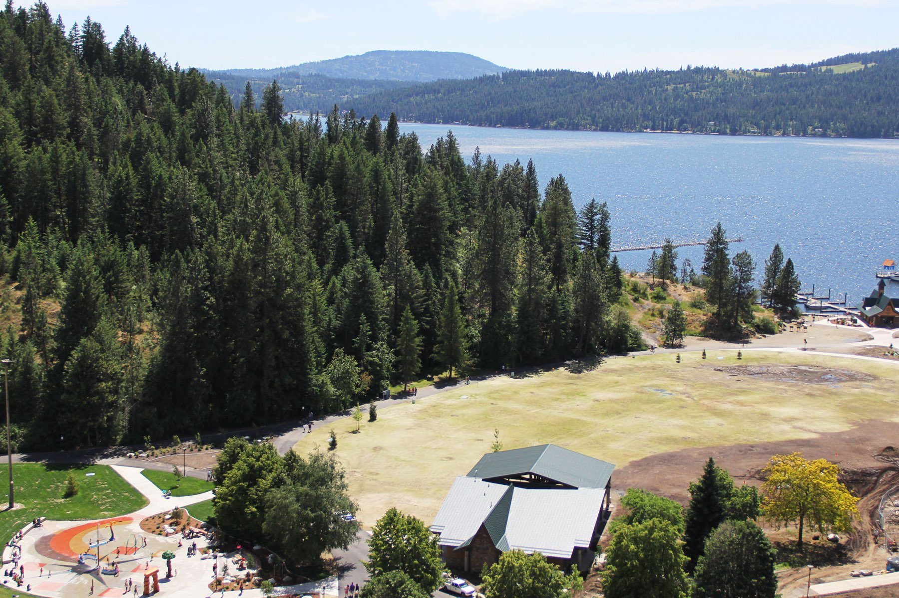
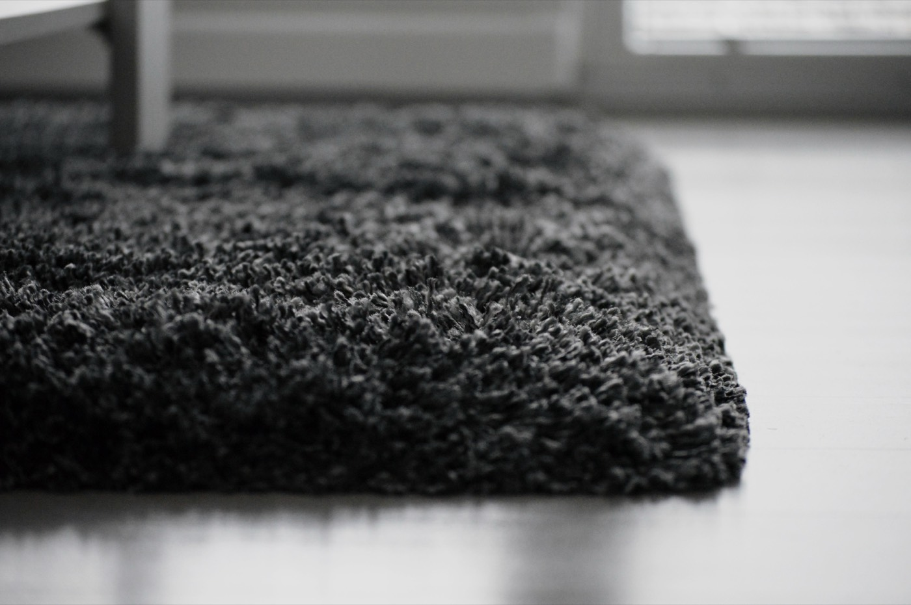
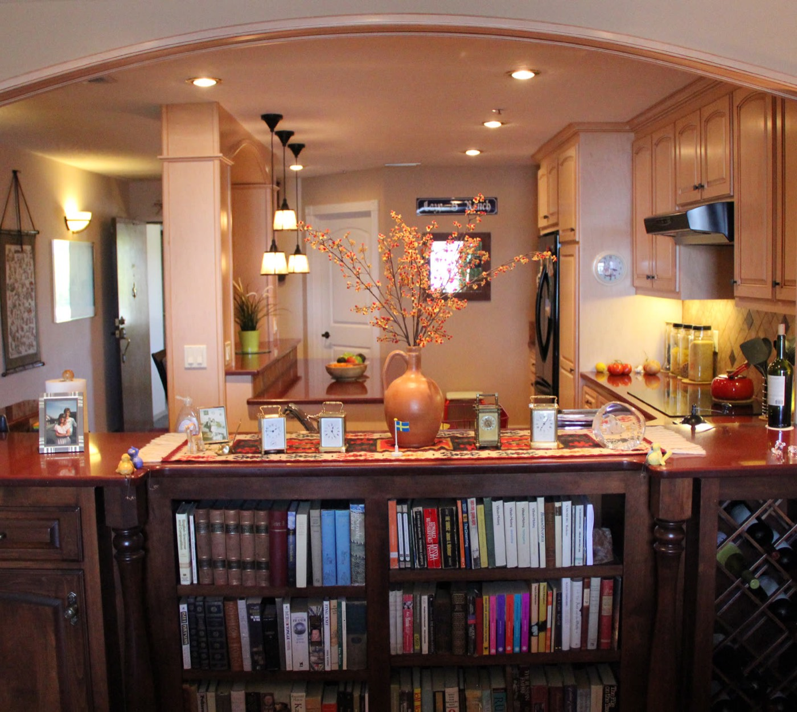
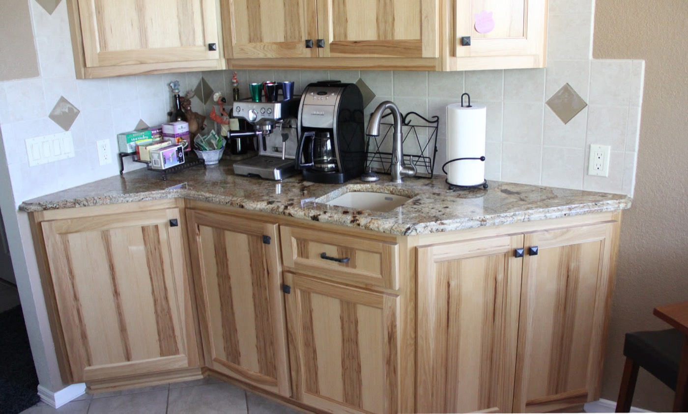
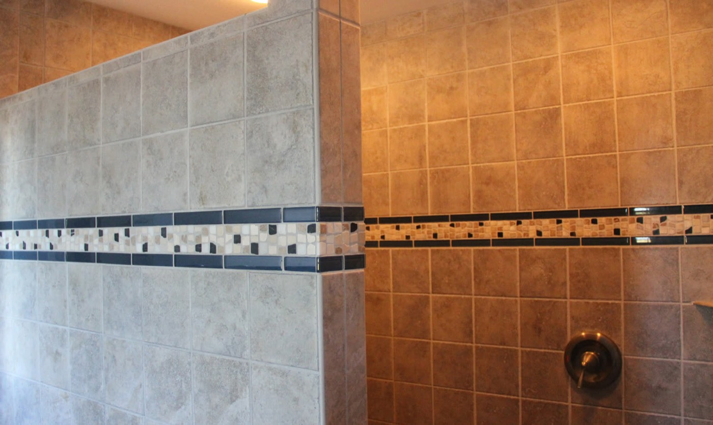
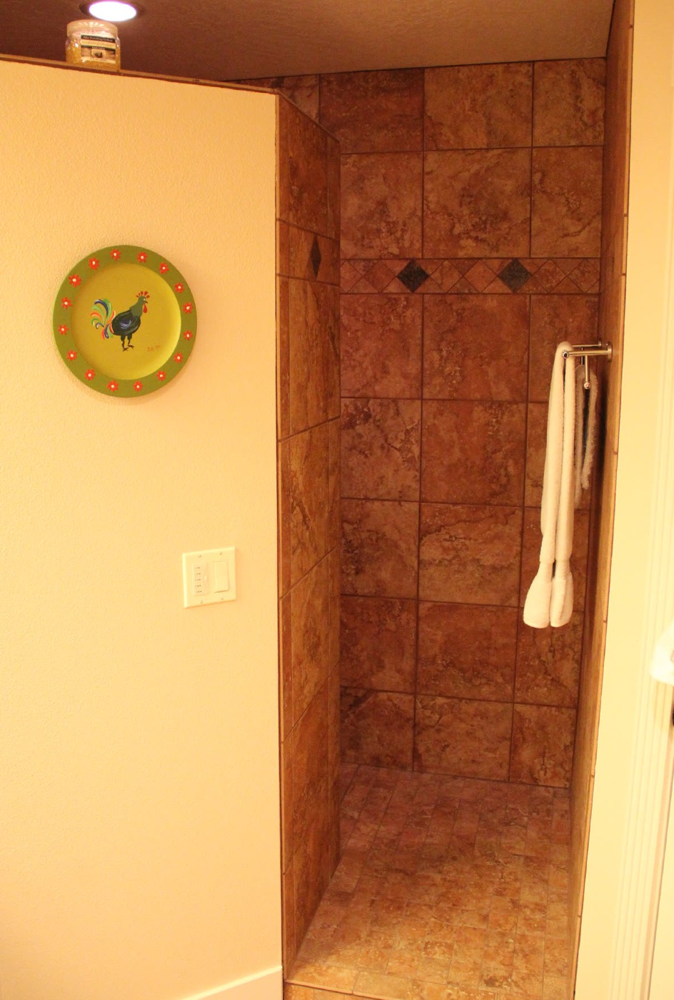
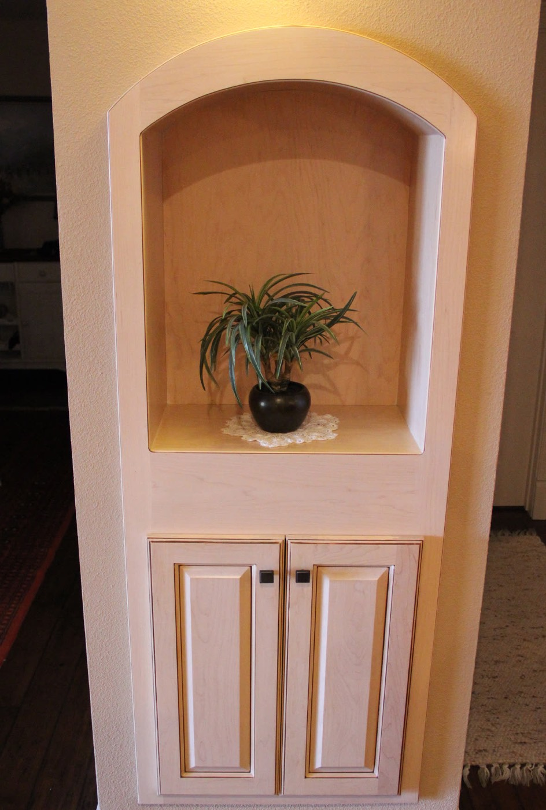
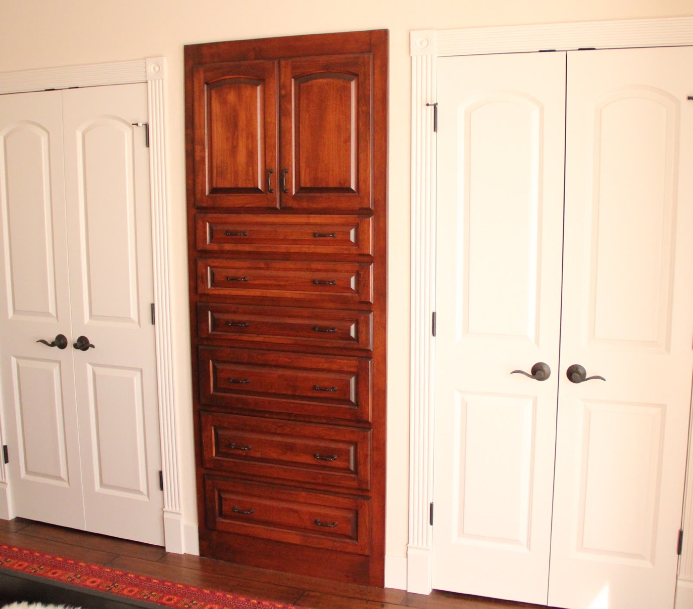

Residential carpet & upholstery
No chemicals. Our method is truck-mounted hot water extraction, and we are a licensed applicator of Scotchgard carpet and upholstery protectant.
Coeur d'Alene · North Idaho · Spokane
Magic Carpet Services opened for business in Coeur d'Alene in 2000. Carpet and upholstery cleaning, around-the-clock water damage service, flooring and complete home remodels, all from one local team.

Serving North Idaho and Eastern Washington from Dalton Gardens.
A word from the owner
“Empower people to do the right thing and they will. Our employees are our strongest asset. Our goal is to exceed your expectations.”
Dennis Fenenbock · Owner and operator
At Magic Carpet Services, Dennis looks for people who embody that spirit and gives them the training to carry out the mission every day. They are on the front lines of the company and give customers the service they expect.
Open sinceOpened for business in Coeur d'Alene.
Cleaning servicesFrom deep soil extraction to grout sealing and rug cleaning.
Towns servedAcross North Idaho and Eastern Washington.
DivisionsResidential, commercial, restoration and remodel.
What we do
Our referral-based clientele is second to none. Services can be tailored to any budget.
No chemicals. Our method is truck-mounted hot water extraction, and we are a licensed applicator of Scotchgard carpet and upholstery protectant.
Professional carpet cleaning for major clients and accounts throughout North Idaho and the Spokane, Washington area.
Quick, around-the-clock water damage service. We work with all major insurance companies, from initial disaster and cleanup to restoration and completion.
Every phase from design to installation: hardwood, laminate, tile, carpet, vinyl, granite and Formica counters, custom cabinetry, plus electrical, plumbing, painting and drywall.

How we clean
Conventional cleaners clean the surface of your carpet. Our professional cleaners get to the root of the problem.
Remodel division
Photos from two customer homes that started as water-damage calls and became complete remodels: the McTear and Boggan projects.






Testimonials
Shared on the Magic Carpet Services website, lightly shortened.
It was 3 am and we had major water damage in my condo! A friend called Magic Carpet Services and Dennis Fenenbock responded within a few minutes and immediately began damage control. Magic Carpet handled the entire effort (mitigating the damage, the insurance claim, and the reconstruction) and did an excellent job putting our condominium back together. A couple of years later he completely remodeled our condominium. His work speaks for itself.Wm. Joe & Barbro Boggan · Coeur d'Alene
The flood on our ground floor that introduced us through your damage repair work turned into a relationship we appreciate. The many projects we have undertaken with you have transformed our home into an open, airy, functional and beautiful home.John & Betsy McTear
I had a major flood in my basement, made the phone call, and within half an hour, the crew came to save our floor from a total disaster. I'd recommend Magic Carpet Services to anyone.Jenna T.
Questions
Truck-mounted hot water extraction. We do not use any chemicals for residential carpet and upholstery cleaning, and we are a licensed applicator of Scotchgard carpet and upholstery protectant.
Yes. We work with all major insurance companies, from the initial disaster and cleanup services to job restoration and completion.
Please mention the number of bedrooms to be cleaned and/or the total square feet. Check our Facebook page for current promotions.
North Idaho: Coeur d'Alene, Post Falls, Hayden, Rathdrum, Athol, Sagle, Sandpoint, Priest Lake, St. Maries and Wallace. Eastern Washington: Spokane, Spokane Valley, Colville, Deer Park and surrounding areas.
Yes. Delicate synthetic rugs can be destroyed if cleaned conventionally. Our certified cleaners know how to clean them, including Persian and Oriental rugs, with people- and pet-safe products.
Get your quote
We offer the most competitive prices in the North West for carpet cleaning, floor installs and complete home remodels.